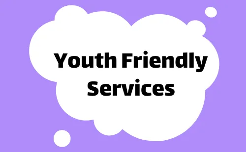
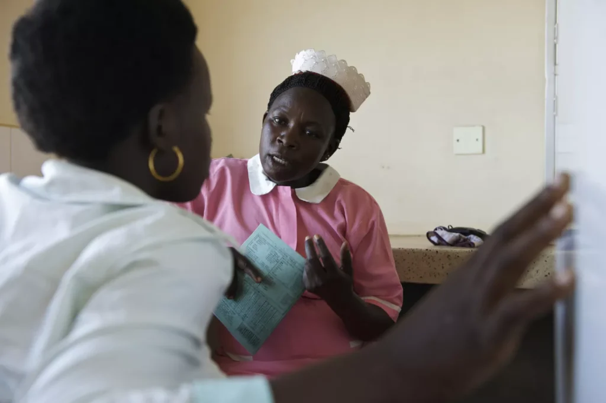
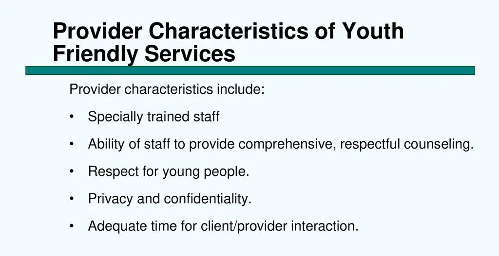
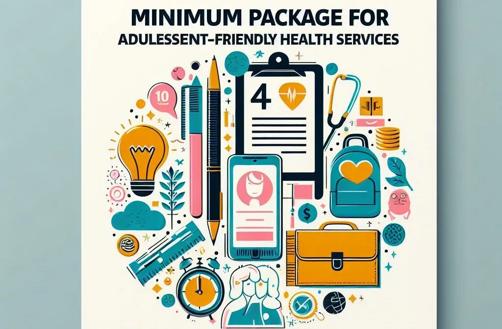

Expanded Nursing Uganda Explanation
Adolescent friendly health services should be understood beyond a short definition. Link the concept to patient history, focused assessment, common risks, nursing priorities, documentation and evaluation of outcomes.
01 ADOLESCENT FRIENDLY HEALTH SERVICES
Adolescent-friendly health services refer to those services that are geographically accessible, affordable, acceptable, welcoming, and provide confidentiality for adolescents.
These services are specifically made for the youth, addressing their reproductive health needs. They include counselling , contraceptive services , post-abortion care , Voluntary Counseling and Testing (VCT) , and STI information and management , including referrals.
Adolescents face many health challenges especially those related to reproductive health which include;
- Early/unwanted pregnancies
- Unsafe abortion
- STI/HIV/AIDS
- Female genital mutilation
- Psychosocial problems
- Substance abuse
- Sexual abuse
As a result of the above problems, many adolescents drop out of schools or lead a compromised and vulnerable life as both adolescents and adults.
Adolescents and young people need to be reached with adolescent-friendly services (ADFHS) to mitigate the multiple health challenges and behavioural risks that they are faced with. This has to be done in a manner that ensures availability and accessibility by all young people including those in conflict and hard to reach areas.
02 Factors Restraining Adolescents from Accessing Adolescent-Friendly Health Services (ADFHS)
- High Cost of Health Care : Financial constraints make healthcare services less accessible for adolescents.
- Long Distances to Health Units : Geographical barriers, especially in remote areas, limit physical access to health facilities.
- Poor Access to Information : Limited availability of accurate health information affects adolescents’ ability to make informed decisions about their health.
- Poor Transport and Communication Systems : Inadequate infrastructure hampers transportation to health facilities and communication about available services.
- Poor Staffing at Service Points : Insufficient staffing levels result in delays and reduced service quality.
- Negative Attitudes and Behaviours of Health Staff: Open rudeness and disrespectful behaviour by some health workers create an unwelcoming environment, discouraging adolescents from seeking assistance, particularly regarding sensitive topics such as sexually transmitted diseases (STDs).
- Lack of Confidentiality : Concerns about breaches of confidentiality and unprofessional behaviour from service providers affect adolescents from using available services.
- Lack of Parental Support : Adolescents may face challenges when seeking services without the support or understanding of their parents.
- Scarcity of Adolescent-Friendly Services : The concentration of such services in urban areas limits accessibility for adolescents in rural settings.
- Lack of Confidence in Services : Doubts about the quality and effectiveness of services contribute to hesitancy in seeking healthcare.
- Shortage of Health Education (IEC): Insufficient health education leads to a lack of awareness about available services and health-related issues.
- Chronic Shortages of Supplies : Limited availability of essential supplies, including contraceptives and counselling services, poses a barrier to comprehensive care.
- High-Risk Behaviours: Engagement in risky behaviours, such as substance abuse, transactional sex, and homelessness, further complicates adolescents’ health challenges.
- Harsh Socio-economic Conditions : Household poverty, unemployment, child labour, street children, and parental neglect create conditions that contribute to dropping out of school and high illiteracy, especially among girls.
- Cultural Barriers : Traditional beliefs and practices may clash with modern healthcare, creating resistance.
- Stigma and Discrimination : Fear of judgement and discrimination from the community may prevent adolescents from seeking healthcare.
- Legal Restrictions : Legal constraints and age-related barriers may limit adolescents’ autonomy in accessing certain services.
- Limited Youth-Friendly Spaces : Insufficient designated spaces for adolescents within health facilities hinder comfort and privacy.
- Technological Gaps : Limited access to digital health resources may impede adolescents’ ability to obtain information and services online.
03 Rationale for Implementing Adolescent-Friendly Services
In the past, reproductive health services that had been offered to adolescents and young people through the adolescent-friendly approach were fragmented, varied and incomplete.
For adolescents to achieve their full potential they need to be provided with opportunities to:
- Live in a Safe and Supportive Environment: Foster an environment that ensures the safety and well-being of adolescents.
- Acquire Accurate Information and Values about Health and Development Needs : Provide comprehensive and reliable information that aligns with the health and developmental requirements of adolescents.
- Build Life Skills for Health Protection : Equip adolescents with essential life skills that empower them to protect and safeguard their health effectively.
- Obtain Counselling Services : Offer counselling services to address the challenges and concerns faced by adolescents.
- Access a Wide Range of Services Catering to Health Needs : Ensure accessibility to a diverse range of services specifically designed to meet the multiple health needs of adolescents.
04 Objectives of Adolescent-Friendly Services:
- Identify Critical Adolescent Health and Development Gaps : Systematically assess and address the unmet health and developmental needs of adolescents.
- Promote Good Health-Seeking Behaviour in Adolescents : Encourage and instil positive health-seeking behaviours among adolescents to empower them in making informed decisions about their well-being.
05 Potential Sites for Information and Services for Adolescents:
- Home : Empower families to provide a nurturing environment that promotes open communication and support.
- Health Institutions : Incorporate adolescent-friendly services within healthcare settings to ensure accessibility and confidentiality.
- School : Establish health education programs within schools to impart essential knowledge and skills to adolescents.
- Youth Organizations : Collaborate with youth-focused organizations to reach adolescents through community engagement and targeted initiatives.
- Mass Media : Utilize mass media platforms to disseminate accurate information and engage adolescents on relevant health topics.
Target Groups for Adolescent-Friendly Health Services
All adolescents are eligible for adolescent friendly health services irrespective of their age or marital status. Every adolescent in need is to be targeted however the priorities are:
- Adolescents and Their Peers (10-24 Years): Ensuring services are directly accessible and relevant to adolescents themselves and their peer groups.
- Parents and Guardians : Involving caregivers to create a supportive environment and promote family engagement in adolescent health.
- School Teachers : Recognizing the important role teachers play in the lives of adolescents, ensuring they are informed and equipped to address health-related concerns.
- Health Workers, Including Village Health Teams (VHTs): Capacitating healthcare providers, including community health workers, to deliver the needed services and support.
- Sexual Workers : Acknowledging the health needs and vulnerabilities of adolescents involved in sex work, aiming to provide specialized care and support.
While the primary target groups are needed for the direct provision and support of adolescent-friendly health services, secondary targets play a complementary role in creating an enabling environment and fostering community-wide acceptance. These secondary target groups include:
- Community Leaders:
- Engaging community leaders in advocating for and promoting awareness of adolescent-friendly health services within their communities.
- Encouraging leaders to support initiatives that enhance the well-being of adolescents.
- Educational Institutions (School Administrators, Boards):
- Collaborating with school administrators and boards to integrate comprehensive health education into school curricula.
- Ensuring that educational institutions provide an environment conducive to the physical and mental well-being of students.
- Media Outlets (Journalists, Editors):
- Partnering with media professionals to disseminate accurate information about adolescent health.
- Encouraging responsible reporting and awareness campaigns through various media channels.
- Policy Makers and Government Officials:
- Advocating for policies that prioritize adolescent-friendly health services.
- Collaborating with policymakers to allocate resources and support the implementation of youth-centric health programs.
- Religious and Faith-Based Organizations:
- Involving religious leaders in promoting positive health values and practices among adolescents.
- Collaborating with faith-based organizations to create supportive spaces for discussions on reproductive health.
- NGOs and Community-Based Organizations:
- Partnering with non-governmental organizations and community-based groups to extend the reach of adolescent-friendly health services.
- Leveraging existing networks to enhance community participation and awareness.
These secondary targets contribute to the broader acceptance, understanding, and integration of adolescent-friendly health services within the community.
1. Provider’s Characteristics:
- Specially Trained Staff: Knowledgeable and trained professionals available and accessible at all times.
- Respect for Rights : Providers demonstrate respect for the sexual and reproductive health rights of young people.
- Adequate Time: Sufficient time allocated for meaningful interaction between providers and adolescents.
- Peer Counsellors : Availability of peer counsellors for additional support.
- Positive Attitudes : Providers exhibit positive attitudes, eagerness, and a commitment to serving young people.
- Non-Judgmental Approach : Services are delivered in a non-judgmental manner, promoting a safe and open environment.
- Effective Referral Mechanism : Quick and efficient referral system to specialized services when needed.
- Active School Participation : Actively participate in school health programs where applicable.
- Outreach Services : Organize specialized services as outreach programs to reach hard-to-reach young people.
- Interpersonal Skills : Providers possess interpersonal skills to establish a strong provider-client relationship.
- Respectful : Demonstrate respect for the autonomy and dignity of young people.
2. Health Facility Characteristics:
- Integration : Youth-friendly services should be integrated into existing health services.
- Convenient Location : Facilities are strategically located for easy accessibility by young people.
- Adequate Space: Sufficient space available to accommodate the needs of young clients.
- Prompt Service Participation : Prompt engagement of young people in service delivery without unnecessary delays.
- Comfortable Environment: Facilities provide visual and auditory privacy, gender-sensitive toilets, and handwashing facilities.
- Daily Integrated Services : Daily provision of integrated services for comprehensive adolescent health care.
- Educational Materials : Information materials cover body changes, personal care, nutrition, substance abuse, reproductive health, life planning, and the ABC strategy.
- Relevant Posters : Posters are relevant, appealing in size, language, and colour to engage young people effectively.
- Case Management Guidelines : Facilities have clear case management guidelines for service delivery.
- Data Recording Systems : Simple data recording systems ensure anonymous data analysis for continuous improvement.
- Job Aides: Service providers have access to job aides for effective service provision.
- Strong Referral Systems: Facilities establish strong linkages with schools and other health facilities for efficient referrals.
- Education Materials Availability : Presence of educational materials such as brochures, pamphlets, radios, and TV shows for sexuality education.
- Discussion Rooms and Recreation : Attractive recreation materials and discussion rooms with engaging activities for adolescents.
Adolescent-Friendly Services Should Be:
- Affordable, Accessible, and Appropriate : Services are within reach, cost-effective, and suitable for the needs of young people.
- Attractive and Welcoming: Facilities are designed to be appealing and welcoming to encourage adolescent utilization.
- Observant of Rights : Services prioritize and uphold the rights of young people.
- Confidential : Facilities observe strict confidentiality in service provision.
Key points
1. Counselling : In order to promote effective use of adolescent health, all adolescents should be provided with adequate information about adolescent reproductive service. The discussion between the adolescents and service providers should be private and confidential to allow adolescents to make informed decisions. Counselling should aim at promoting and encouraging continued use of adolescent reproductive health services.
2. Referral : in order to access complete package of adolescent reproductive services, appropriate referral/linkage to other services should be made promptly whenever needed for the following problems:-
- Alcohol and substance abuse
- Rape and defilement
- Early unwanted pregnancies
- Unsafe abortion
- Female genital mutilation
06 Minimum Package for Adolescent-Friendly Health Services:
The minimum package for Adolescent-Friendly Health Services outlines essential components and services that should be included in healthcare provisions tailored for adolescents. Each element in the package aims to address the specific needs and challenges faced by adolescents in their reproductive health.
Clinical care for sexual and gender-based violence:
- Services to address the physical and mental health needs of adolescents who have experienced sexual or gender-based violence.
Prenatal and maternity care for pregnant adolescents:
- Comprehensive care for pregnant adolescents, covering prenatal services and assistance during childbirth.
HPV immunization:
- Vaccination against Human Papillomavirus (HPV), a sexually transmitted infection that can lead to cervical cancer.
HIV counselling and testing:
- Services related to HIV counselling and testing, emphasizing awareness, prevention, and management.
Breast examination:
- Screening and examination services related to breast health.
Information and counselling on health, growth & development, and sexuality:
- Educational services providing information on various health topics, growth and development, and sexuality.
Information on rights and responsibilities:
- Guidance on the rights and responsibilities of adolescents concerning their health and well-being.
Referral and follow-up:
- Establishing a mechanism for referring adolescents to specialized services when needed, ensuring continuity of care.
Life skills education and recreational services:
- Educational programs focusing on life skills, such as decision-making and communication, with recreational activities to promote overall development.
07 Nursing Uganda Clinical Lens
Use Adolescent friendly health services as a practical nursing topic, not only a memorized definition. Start with normal structure and function, then connect it to assessment findings and disease.
- What to understand first: define adolescent friendly health services, identify the normal or expected pattern, then explain what changes when the patient is unwell.
- Why it matters in care: the nurse must recognize risk early, explain findings clearly, document accurately and know when to escalate.
- How to revise it: connect each point to assessment, nursing diagnosis or care problem, intervention, rationale and evaluation.
08 Assessment Guide
- Relevant inspection, palpation, movement, auscultation, vital signs or neurological checks.
- Normal findings, abnormal findings and what each abnormality may indicate.
- Patient history, risk factors and how the body system affects other systems.
09 Nursing Priorities, Rationales and Outcomes
- Use anatomy to explain symptoms and guide focused assessment.
- Recognize findings that need urgent escalation.
- Teach the patient using simple body-system language.
The rationale for these priorities is patient safety: nursing actions should prevent deterioration, reduce discomfort, support recovery and create clear evidence for the next caregiver.
- Expected outcome: The learner can explain normal function, identify abnormal signs and connect them to nursing action.
10 Patient Teaching and Revision Check
- Explain adolescent friendly health services in simple language the patient or caregiver can repeat back.
- Teach warning signs, medicine or follow-up instructions, hygiene or lifestyle points where relevant.
- For exams, prepare a short answer using: definition, causes or risk factors, signs, assessment, management, complications and prevention.
- For ward practice, document baseline findings, actions taken, patient response and the plan for review.
Illustrations and Diagrams (6)





Related Video Lectures
Watch nursing lecture videos on YouTube for this topic. Opens in a new tab.
Watch on YouTubeExternal link: YouTube may use its own cookies and terms. Nursing Uganda is not affiliated with YouTube.